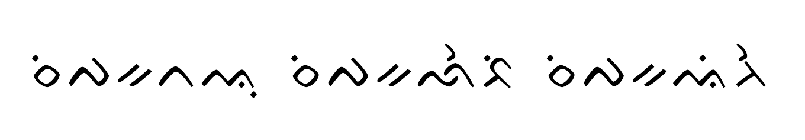
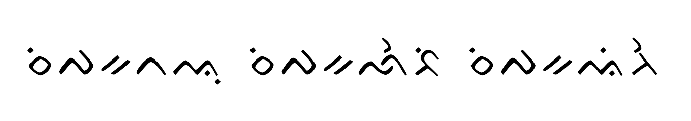

Perekonomian Kabupaten Wajo didorong oleh beberapa sektor utama yang saling terkait, di antaranya pertanian, perikanan, perdagangan, dan industri kerajinan. Berikut adalah gambaran lebih lengkap mengenai perekonomian di Kabupaten Wajo:

 
